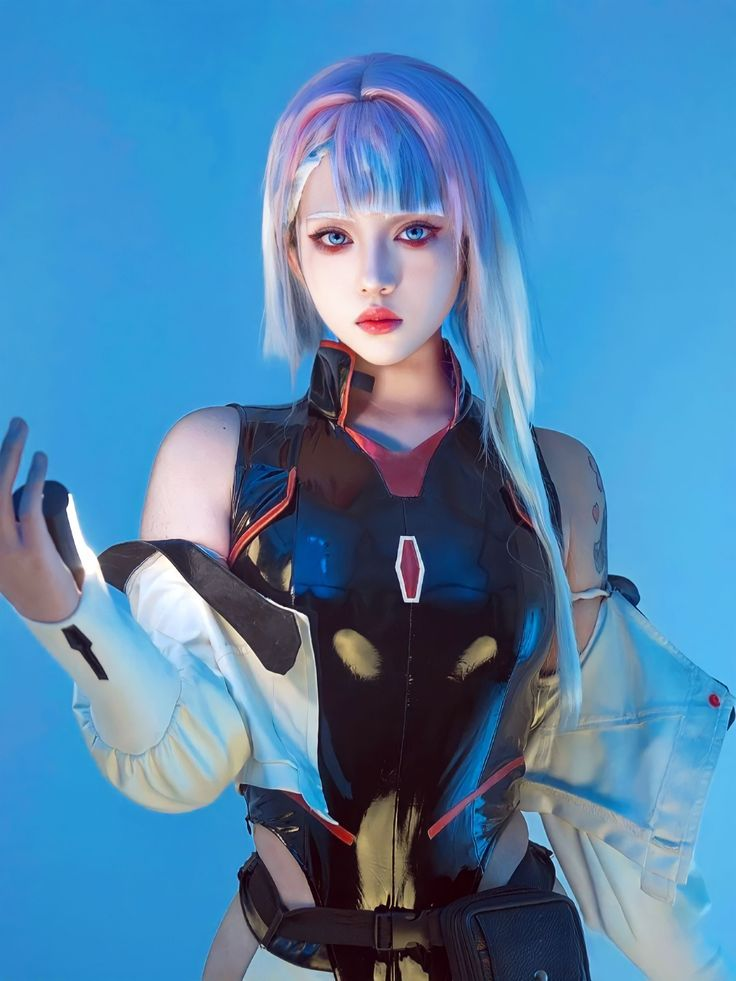
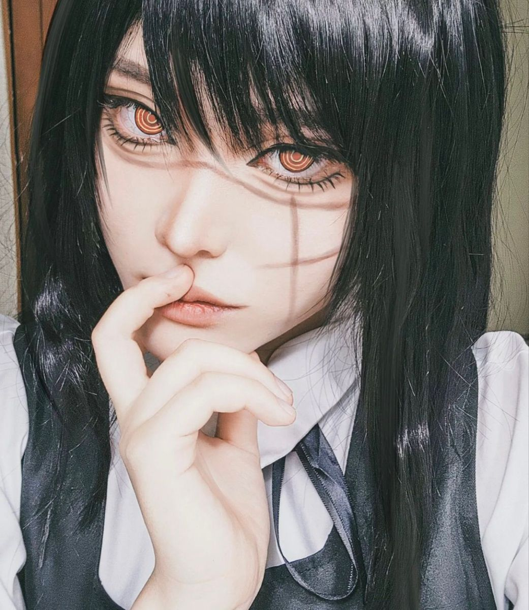
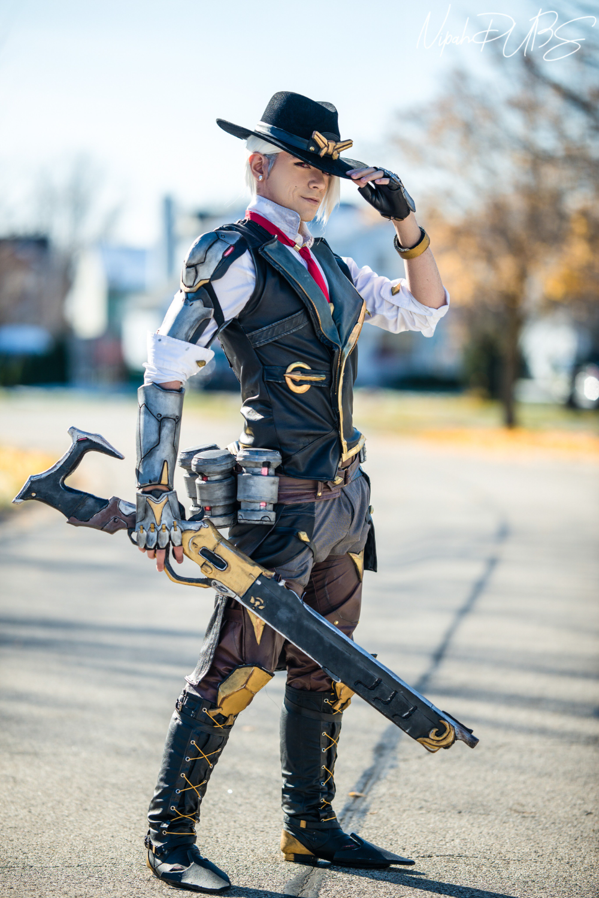
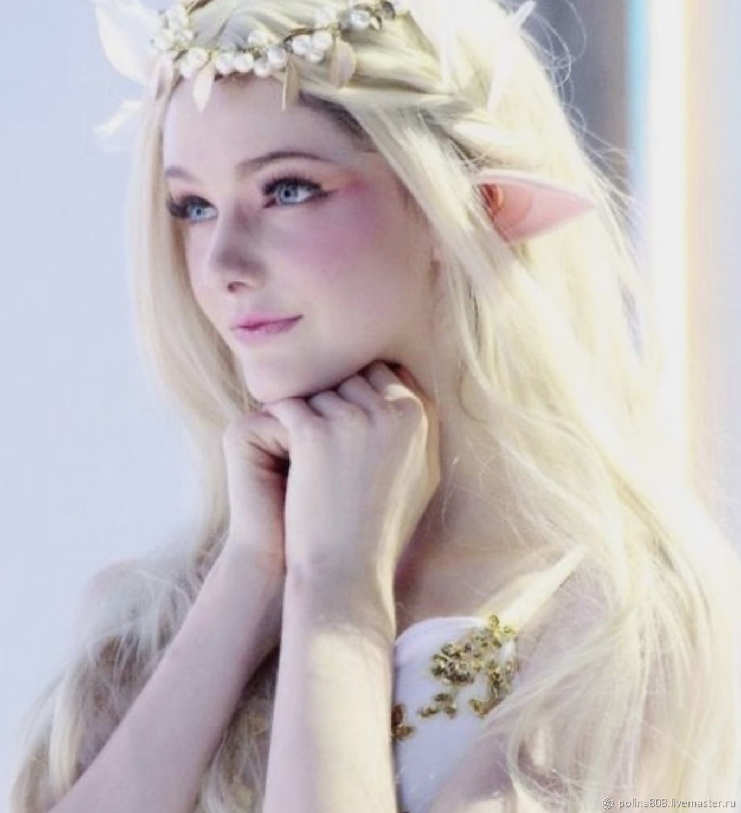
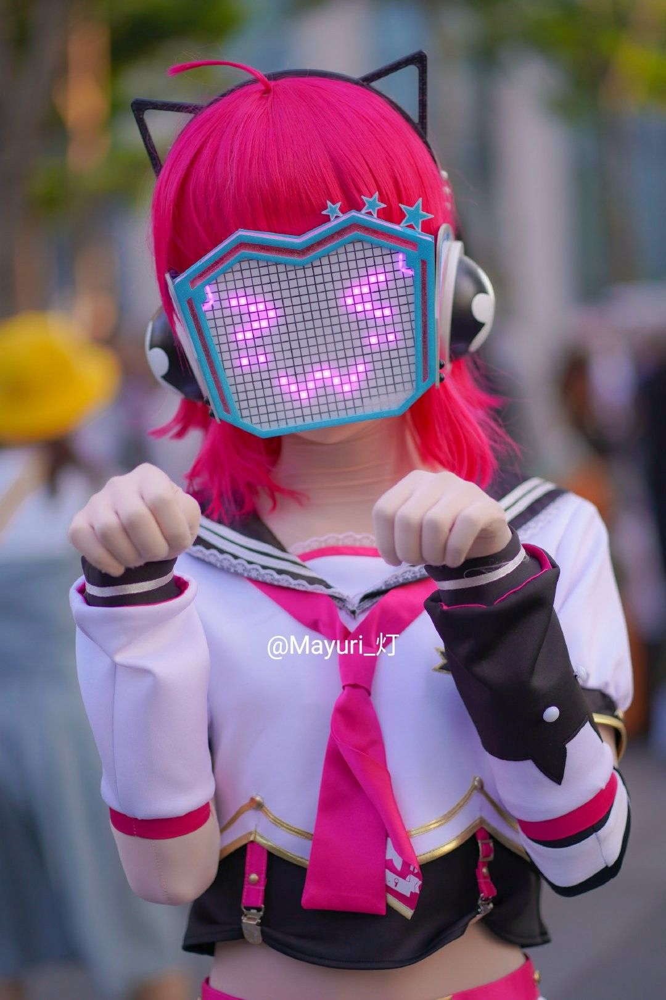

В этом сезоне в моде — яркие образы из любимых аниме и игр. Уличный стиль смешивается с косплей-эстетикой: многослойность, неоновые акценты и уникальные аксессуары.
От Cyberpunk до Fantasy — создаём образы, которые выделяют тебя из толпы. Покажи свой стиль на конвентах и в повседневной жизни.
На фото справа — один из главных трендов: многослойный лук с элементами киберпанка и фэнтези. Вдохновляйся и создавай своё!
Косплей — это не просто костюмы. Это способ выразить себя и найти единомышленников по всему миру.
Присоединяйся к нашему сообществу: делись образами, получай советы от профессионалов и участвуй в конкурсах!




Выбери персонажа, который тебе по душе. Не обязательно начинать со сложных доспехов — простые образы тоже круто смотрятся.
Изучи референсы: скриншоты, арты, официальные материалы. Обрати внимание на детали костюма и аксессуары.
Подбери материалы: для новичков отлично подходит фоамиран (EVA foam) — он легко режется, греется и клеится.
Не забывай про парик и макияж — они часто делают образ узнаваемым даже без сложного костюма.

На этом фото — работа талантливого косплеера. Образ собран из сочетайния пошитых элементов и покупных деталей. Главный секрет: правильные пропорции и внимание к фактурам. Хочешь повторить? Смотри наш гайд по созданию базового костюма!
Не бойся экспериментировать с образами — иногда самые неожиданные сочетания становятся вирусными.
Ищи сообщество по душе: в косплей-тусовке тебе всегда помогут с советом и поддержкой.
Помни: у каждого мастера свой путь. Кто-то шьёт годами, кто-то осваивает 3D-печать, а кто-то становится звездой благодаря актёрской игре в образе.
Косплей — это не соревнование, а творчество. Твой первый костюм может быть далёк от идеала, но именно с него начинается твой уникальный стиль. Снимай прогресс, участвуй в конкурсах новичков, проси обратную связь. Каждый следующий проект будет лучше предыдущего, а главное — ты получишь море эмоций на конвентах и найдёшь друзей, которые разделяют твои увлечения. Не откладывай мечту в долгий ящик — возьми ножницы, закажи фоамиран и сделай первый шаг уже сегодня!